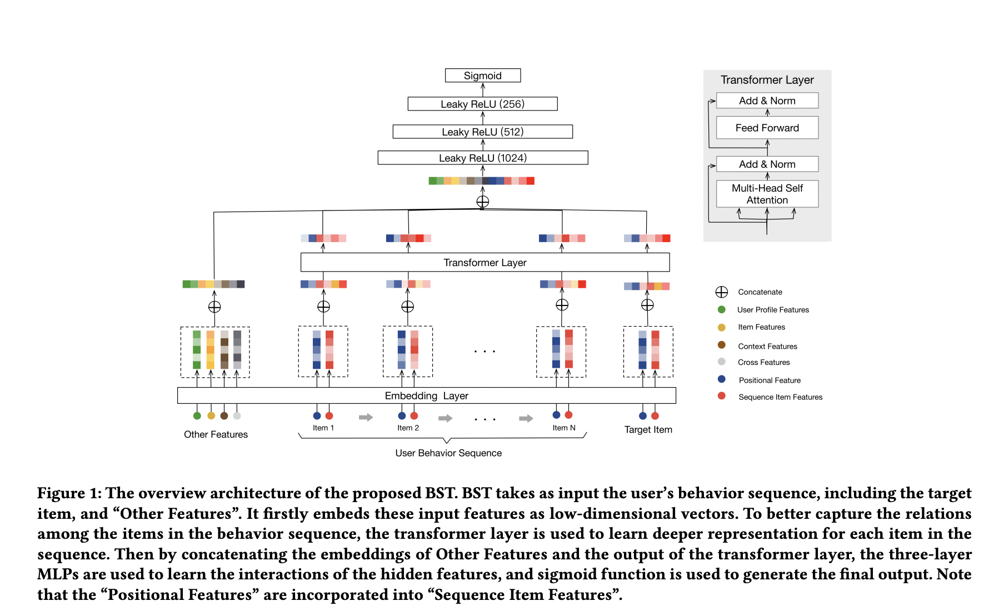

4. 精排
精排是推荐系统最重要的一环，直接决定了用户个性化的优劣。好的精排模型直接决定了用户的留存和转化，因为其推出的 Item 就直接代表了用户的兴趣点。如果精排模型出现差错，直接的表现就是点击率大幅下降，用户将逐渐流失，转化也会逐渐减少，因此精排是非常重要的一环。
最初的推荐系统并不存在冷启动、召回、粗排和重排，仅仅只有一层精排，CF 就是最早的精排模型，这时候仅仅只考虑用户和 Item 的点击共现关系。
后面出现的 LR 开始在各大公司大行其道，其中的优秀代表作就是百度的大规模特征工程 + LR，其主要作用就是将 User 的基础特征和 Item 的基础特征提取出来，加上大量的人造特征提取 User 和 Item 的共性，然后运用梯度下降让模型去学习 User 和 Item 的关系，其主要优点就是速度快，缺点是需要大量的特征工程去堆砌和实验。
2014 年，基于树模型的 GBDT 开始被广泛应用于市场，因为其对于连续特征的处理的优秀能力，经常被用来作为连续特征的提取器提取叶子特征，供给 LR 使用。
之后精排开始进入深度学习时代，特征开始 Embedding 化，模型也出现了几个不同的优化分支：第一个分支是模型侧的特征交叉，主要的代表作有 FM、FFM、DeepFM、DCN、DCNv2、FibiNet 等；第二个分支是序列特征的兴趣提取，主要代表作有 DIN、DIEN、SIM 等；第三个分支是多目标模型的研究，主要代表作有 ESMM、MMOE、SNR 和 PLE 等。
4.1. 特征
Context 特征 ：时间、场景、操作系统等
User 特征 ：
静态特征：年龄、性别、城市等
统计特征：最近 7 天的 PV、CTR、CVR等
行为序列：点击/购买/收藏等
Item 特征 ：
静态特征：类目、品牌等
统计特征：最近 7 天的 PV、CTR、CVR等
交叉特征：与 User 特征的 Hit/Trigger 编码等
Note
对序列特征的处理一般是 Sum/Mean Pooling 或者 Attention（DIN/DIEN/BST）等。
特征重要性：可以在网络 Embedding 层之后加一层 L1 Layer，为每个特征分配一个权重，Loss 中加入这些权重对应的 L1 Loss；或者使用 SENet 来做特征加权。新增特征也可以通过 AB 实验来简单验证有效性。
4.2. 交叉模型
Factorization Machines
FM 模型旨在解决稀疏矩阵下的特征组合问题。传统机器学习问题，一般仅考虑如何对特征赋予权重，而没有考虑特征间存在相互作用（关联性），FM 模型的提出较好地解决了该问题。 FM 模型对于稀疏数据有较强的学习能力，且预测是 线性时间复杂度 。
二阶交叉模型：
上式考虑了任意两个（互异）特征分量之间的关系。然而，这种直接在 \(x_i x_j\) 前面配一个系数 \(w_{ij}\) 的方式在稀疏数据上有一个很大的缺陷： 对于观察样本中未出现过交互的两个特征分量，不能对相应的参数进行估计（权重为 0）。
通过引入矩阵分解，将 \(w_{ij}\) 表示为 \(\langle \mathbf{v}_i, \mathbf{v}_j \rangle = \mathbf{v}_i^{\top} \mathbf{v}_j\) ，交互矩阵 \(W = V V^{\top} \in \mathbb{R}^{n \times n},\ V \in \mathbb{R}^{n \times k}\) 。 这样一来，每个特征 \(x_i\) 都关联了一个向量 \(\mathbf{v}_i\) ，这个向量就是需要学习的参数。在高度稀疏的数据场景中，由于没有足够样本来估计复杂的交互矩阵，因此 \(k\) 一般取很小的值（对其限制能提高模型的泛化能力）。
于是，二阶交叉模型变成：
通过转换，可以将计算复杂度降低为 \(\mathcal{O}(kn)\) ：
Tip
实际应用中并不一定需要所有特征的二阶交叉，仍然会根据先验知识人工挑选一些特征。
Wide & Deep
Wide & Deep 模型分为 Wide 侧和 Deep 侧两部分。Wide 侧利用复杂的人工交叉特征去提高”记忆”能力，一般是 LR 模型或者 FM 模型；在 Deep 侧引入 DNN 让模型具有自动交叉组合的能力从而提高泛化性。
“记忆”能力可以理解为模型直接学习并利用历史数据中物品或特征的“共现频率”的能力。简单的模型能够让原始输入数据更直接地影响输出结果，相当于模型记住了历史数据的分布特点。
“泛化”能力可以理解为模型传递特征的相关性、发掘稀疏甚至从未出现过的稀有特征与最终标签相关性的能力。深度神经网络通过特征的多次自动组合，可以深度发掘数据中潜在的模式，得到较为稳定、平滑的推荐概率。
Wide 侧的交叉特征仍然需要精心设计， Wide 侧和 Deep 两部分模型的超参协同调优也很关键。
DeepFM
DeepFM 是 DNN 与 FM 结合的产物，也是 Wide & Deep 的改进版，只是将其中的 LR 替换成了 FM，提升了模型 Wide 侧特征组合的能力。 Deep 与 FM 这两个部分的输入是一样的，并没有像 Wide & Deep 模型那样做区分。
FM 有两部分：线性部分和二阶交叉部分。线性部分给予每个特征一个权重，然后加权求和；交叉部分是对特征进行两两相乘，然后加权求和。两部分结果累加在一起即为 FM 侧的输出。
实际应用中，FM 侧不一定要对所有特征做交叉，这里也可以人工归类一些特征组，然后对这些特征组的均值 Embedding 做交叉。
Note
Embedding 层的作用是将稀疏（Sparse）特征转换成稠密（Dense）向量，其参数量非常巨大，且由于输入特征过于稀疏，因此 Embedding 层是收敛速度很慢。
4.3. 序列建模与 Attention
DIN

出发点：
Diversity：在一段时间内，用户的点击兴趣具有多样性。
Local Activation：尽管用户的兴趣很多，但是只有部分行为兴趣对当前的点击产生作用。
其做法是对序列 ID Embedding 加入 Target Attention。
Note
- Self Attention 和 Target Attention
在推荐领域，两者的区分可以简单理解为：Q、K、V 是否来自相同的特征。当 Q、K、V 均来自相同特征时，则为 Self Attention，反之则为 Target Attention。 在精排模型中，基本采用 Target Attention ，将当前 Item 作为 Q，用户历史行为序列作为 K 和 V。 也有一些模型应用时无法采用 Target Attention，比如双塔模型 User 和 Item 侧是分开的，无法在某一侧的模型结构中同时获得 Item 和用户行为历史，此时则可采用 Self Attention。
DIEN

DIEN 解决的是用户兴趣迁移的问题。用户的兴趣通常随着时间的流逝会发生变化，直接用 DIN 建模仅仅是关注相似的兴趣，而没有体现出这种兴趣随时间的迁移变化。所以，DIEN 着重在模型中加入了时间序列的迁移信息。
利用 GRU 抽取用户兴趣和模拟迁移变化。
为了避免兴趣在迁移的过程中造成信息流失，又加入了 AUGRU 强化用户相关兴趣与 Target 的注意力权重。
DIN 更倾向于挖掘用户已经存在的兴趣，根据用户存在的兴趣来推荐用户喜欢的东西，而 DIEN 是根据用户的历史兴趣迁移去挖掘用户新的兴趣。
DIEN 序列模型复杂度高，线上需要串行推断，时延高，需要工程优化。
ETA

ETA 主要是解决长序列的建模问题，为了获得更好的实时性能，首先设计一个辅助任务，从长期用户行为序列中检索 Topk 用户感兴趣的 Item；然后将用户短期的行为序列与检索出的 Topk 个 Item 过一个 Attention 网络。
BST
将 Transformer 用于提取用户行为序列背后的隐藏信息，同时考虑序列的时间顺序，能够更好的表达用户兴趣。
GateNet
提出了 Embedding Gate 和 MLP Hidden Gate，分别作用于 Embedding 层和 MLP 层。
PEPNet

PEPNet 借鉴了 LHUC 算法 的思想（Speaker Adaptation，在 DNN 网络中为每个 Speaker 学习 Hidden Unit Contributions，来提升不同 Speaker 的语音识别效果）， 提出了 Gate NU，通过 Gate NU 为神经网络层输入增加个性化偏置项，可以显著提升模型的目标预估能力。Gate NU 是一个两层神经网络，其中第二层网络的激活函数是 \(2 \times \mathrm{sigmoid}\) ，目的是约束其输出的值域为 [0, 2] ，并且默认值为 1。
PEPNet 主要有两个核心模块：EPNet 和 PPNet。
EPNet 用于 Multi-Task/Multi-Domain 学习，将 Domain 相关的特征作为 Gate NU 的输入，Gate NU 将原始的 Embedding 对不同 Domain 进行映射，进而解决了不同 Domain 特征空间的语义不一致的问题。
PPNet 关注用户的偏好，将个性化先验信息（User、Item、Author）拼接上 EPNet 输出的 Embedding 喂给 Gate NU， Gate NU 再作用于 DNN Tower。对于每一个用户，虽然 DNN 的结构是共享的，但是 DNN 经过 Gate NU 变换，使得最后的预估结果具有个性化。
需要注意的是，EPNet 输出部分不回传梯度，是为了防止 EPNet 的 Embedding 被 PPNet 影响。
4.4. 多目标学习
多目标模型的提出主要针对两个问题：
如果效果可以保证或者说效果下降得没有那么厉害的情况下，用一个模型实现多个任务，减少了模型布置的数量和线上的资源消耗（毕竟一个模型的部署比多个模型的部署要少很多的麻烦和出错概率）。
对于多个具有相关性的任务，多任务模型可以实现任务间的信息交融，从而实现效果的提高。
CTR & CVR 联合建模
ESMM
ESMM 根据点击转化和点击的样本来学习 pCTCVR 和 pCTR 两个目标（共享 Embedding），把 pCVR 当做一个中间变量（隐式地学习），同时输出预估的 pCTR、pCVR 和 pCTCVR。
损失函数中，pCTR 可以看做是 pCVR 的 Soft Mask。
期望解决以下两个问题：
- Sample Selection Bias (样本选择偏差)
传统的 CVR 模型是基于点击的样本建模，而线上预估是在全局样本上预估——即所有候选集上。这就出现了线下训练的样本空间（有点击样本）和预估的样本空间（全局样本）有偏差，即样本空间分布不同。
- Data Sparsity (数据稀疏问题)
点击样本空间远小于曝光的样本空间，特别是某些业务场景点击样本极少，这给训练 CVR 模型带来了很大的挑战。
个人理解，ESMM 这种训练方式并没有给 CVR 的预估带来额外的监督信息（共享 Embedding 贡献了比较大的收益）。在未点击样本上，假如 CTR 已经预估得比较准确，那么 CTR DNN 的输出会接近 0，根据求导链式法则，CVR DNN 获得的梯度将会较小，这时候即使 CVR DNN 输出较大的预估值（模型直接用学到的点击空间的 CVR 作为曝光空间的 CVR），其参数也不会大幅更新。
An Analysis Of Entire Space Multi-Task Models For Post-Click Conversion Prediction 探讨了不同的 CTR & CVR 联合建模方式（参数是否共享、建模空间、优化目标等）， 其实直接共享 Embedding、只在点击空间优化 CVR 预估就能取得较好的效果。
Tip
考虑到除法运算带来的数值稳定性问题，不能直接使用 pCTCVR / pCTR 来建模 pCVR。
Note
未点击样本的转化率不一定是低的，假如因为 CTR 模型预估得不准，把 Item 排在不好的位置，让用户失去了点击的机会，而实际上用户的转化意图可能很强。
ESCM \(^2\)
ESCM \(^2\) 是为了解决 ESMM 模型的两个问题而提出的：
- Inherent Estimation Bias
ESMM 在曝光空间的 CVR 预估值大于实际真实值。ESCM \(^2\) 基于的假设是：点击空间的转化率期望比曝光空间的转化率期望更高，即 \(\mathbb{E}_{\mathcal{O}}[R] > \mathbb{E}_{\mathcal{D}}[R]\) 。（ Multi-IPW/DR 论文 也分析了 ESMM 对 CVR 的高估问题）。 模型上线可能会导致点击率跌、转化率涨。
- Potential Independence Priority
ESMM 假设 CTR 和 CVR 预估任务是独立的（没有建立点击->转化的空间依赖关系），但事实上转化一定是在点击之后发生的事件。ESMM 建模的 CVR 实际上是 \(P(r=1)\) 而不是其预期的 \(P(r=1|o=1)\) ，蕴含了 \(P(r=1|o=0)\) 这一部分。其中 \(o\) 表示点击， \(r\) 表示转化（Post-Click Conversion）。
ESCM \(^2\) 仍然显式地对 CVR 建模，提出 \(\mathcal{R}_{IPS} = \mathbb{E}_{\mathcal{D}} \left[ \frac{o}{\hat{o}} \delta(r, \hat{r}) \right]\) 在曝光空间建模 CVR ，使用预估的 CTR 作为倾向分对 Loss 进行（逆）调权（即 IPS）。 其中 \(\delta\) 是 BCE Loss， \(\hat{o}\) 和 \(\hat{r}\) 分别是预测的 CTR 和 CVR 。在 CTR 预估准确的前提下，\(\mathcal{R}_{IPS}\) 是 理想的 曝光空间 CVR 损失 \(\mathcal{P} = \mathbb{E}_{\mathcal{D}} [ \delta(r, \hat{r}) ]\) （当所有样本及其标签都可观测到）的 无偏估计 ，也即 \(\hat{r} \rightarrow P(r=1|do(o=1))\) 是曝光空间 CVR 的无偏估计（ \(do\) 指代因果推断中的 do 演算）。
考虑到 IPS 的高方差问题（当分母 \(\hat{o}\) 很小，对应的权重很大），训练不稳定，ESCM \(^2\) 还提出了 \(\mathcal{R}_{DR}\) 额外构建了一个 Imputation Tower 预估 CVR 的 预估损失 。
总体优化目标：
其中 \(\mathcal{L}_{\mathrm{CVR}}\) 可以是 \(\mathcal{R}_{IPS}\) 或 \(\mathcal{R}_{DR}\) 。
Note
反事实问题（Counterfactual Problem）：在未点击空间，对 CVR 建模。
虽然 \(\mathcal{R}_{IPS}\) 号称在曝光空间建模，但是公式中乘的 \(o\) 相当于一个 Mask，约束了只对点击样本生效，不过其均值是在所有曝光样本上计算的。
联合建模的问题
联合建模的好处
共享 Embedding，加速收敛。
减轻上线的压力，加速迭代。
分开建模的好处
排序公式可以更加灵活地调控。
CVR 的信号（Label）一般会有延迟，分开建模更加方便高效。
一起训练可能会出现“跷跷板”现象，即一个涨一个跌。
两个任务可以使用不同的特征。
Tip
排序公式一般是基于 CTR 和 CVR 预估分的各种加权变体，比如： \(\mathrm{ctr}^{\alpha} \cdot \mathrm{cvr}^{\beta} \cdot \mathrm{price}^{\gamma}\) 。
MMoE

Share Bottom 的结构在多任务相关性不强时，会损害各自任务的效果。
MoE 模型像是将 Share Bottom 分解成多个 Expert，然后通过门控网络自动控制不同任务对这些 Expert 的梯度贡献。
MMoE 在 MoE 的基础上将所有任务共享一个门控网络变成不同任务使用不同的门控网络，不同任务同一个专家也有不同的权重，更加利于模型捕捉到子任务间的相关性和差异性。
MMoE 中所有的 Expert 是被不同任务所共享的，这可能无法捕捉到任务之间更复杂的关系，从而给部分任务带来一定的噪声。
PLE

{kind=link}
{kind=link}
{kind=link}
{kind=link}
{kind=link}
{kind=link}
{kind=link}
{kind=link}
PLE 致力于解决两个问题：
负迁移（Negative Transfer）：当两个任务/场景的相关性很弱，共享 Embedding 之后效果反而变得更差。
跷跷板现象（Seesaw Phenomenon）：一个任务性能的提升是通过损害另一个任务的性能做到的。
PLE 显式地区分了共享 Expert 网络（参数被所有样本更新）和任务专有的 Expert 网络（参数只会被一个任务的样本更新），使用一个 Gating Network（一层 FC + Softmax）对各个 Expert 输出的向量进行加权。这些 Expert 网络是多层级的。
STAR

创新点：
Partitioned Normalization：假定样本只在各个 Domain 内独立同分布，对不同 Domain 采用私有统计量（均值和方差）和可学习参数（ \(\gamma_p\) 和 \(\beta_p\) ）。
\[z^{\prime} = (\gamma * \gamma_p) \frac{z - E_p}{\sqrt{Var_p + \epsilon}} + (\beta + \beta_p)\]STAR Topology Fully-Connected Network：对于每一个 FC 层，都有中心的共享参数和场景私有参数（私有参数只会被该场景的样本更新），每个场景最终的参数通过二者进行 Element-Wise Product 得到：
\[W_p^{\star} = W_p \otimes W, \quad b_p^{\star} = b_p + b.\]Auxiliary Network：类似于 Wide & Deep 的做法，将 Domain Indicator 特征输入一个小的辅助网络，其输出和主网络相加，再经过 Sigmoid 得到最终预测值。
相比于 MMoE 的优点：
MMoE 对不同任务采用独立的 FC 层，缺少共享参数。
MMoE 通过 Gate 隐式地建模场景间的关系，这样会丢失 Domain-Specific 知识；而 STAR 引入场景先验，通过场景私有参数 & 共享参数显式地建模场景间的关系。
MMoE 需要计算所有的 Expert，计算开销更大。
MMoE 对于新场景不友好，Gate 的学习存在冷启动问题。
Note
论文中还对比了 Cross-Stitch ，这是 CV 领域提出的一个多任务学习方法，用于学习两个网络的 Hidden Layer 输出特征的线性组合。
MTMS
{kind=link}
MTMS 对多任务、多场景进行统一特征管理，训练分成两个阶段：
Update：不同场景的 CTR/CVR 任务独立、并行训练，CTR 和 CVR 任务不共享 Embedding。独立训练各任务能够使模型快速收敛。
Join：固定各模型的 Embedding，然后融合这些 Embedding 去训练 Ranking Network。（两个阶段的 DNN 网络是不一样的）
优化目标为：
4.5. 负采样
为了控制数据规模，降低训练开销，可以保留全部正样本、对负样本进行降采样，一方面提高了训练效率，另一方面还缓解了正负样本不均衡的问题。
负采样带来的问题是 CTR/CVR 预估值的漂移：打分均值偏高。校正公式：
其中 \(q\) 是校正后的打分，\(p\) 是原始的预估分，\(w\) 是负采样频率。
4.6. Bias 问题
Selection Bias
在实际推荐系统中，长尾问题是很常见的，曝光的 Item 永远只是一小部分热门 Item，大量的非热门 Item 曝光是很少的。 更确切地说，参与打分的样本数量远多于被曝光的样本。
消偏思路：
增强冷启动和探索。
迁移学习。
Inverse Propensity Scoring 和 Imputation。
迁移学习： ESAM
{kind=link}
目标是期望模型对曝光空间和未曝光空间的打分分布一致，优化向量召回的效果。
\(\mathcal{L}_{s}\) ：基于观测样本（Source Domain），建模 Query 和 Item 的向量相关性，比如 BCE Loss。
\(\mathcal{L}_{DA}\) ：实现 Attribute Correlation Alignment，要求 Source Domain 和 Target Domain 的 Item 关系是相似的，具体表现为不同 Domain 的协方差矩阵一致。
\(\mathcal{L}_{DC}^c\) ：实现 Center-Wise Clustering for Source Clustering，在 Source Domain 要求相似 Item（具有同类型的 User Feedback，例如点击/购买）高度聚合，不相似的 Item 相互远离（类似于分类任务中的 Center Loss），结合 \(\mathcal{L}_{DA}\) 也间接对 Target Domain 产生了相同的约束效果。
\(\mathcal{L}_{DC}^p\) ：实现 Self-Training for Target Clustering，构造伪标签，通过优化 \(l(x) = -p(x) \log p(x)\) 使得低分的伪负样本得分越来越低，高分的伪正样本得分越来越高。
Inverse Propensity Scoring 和 Imputation
IPS 使用 Propensity Score（倾向分）对 Loss 调权：
Imputation 使用模型在全样本空间对目标进行预估，或者用模型给未观测到的样本预测一个伪标签，不过容易陷入另一个困境：这个模型可能也只是基于观测样本得到的、有偏的。 一般会结合 IPS 共同建模，称为 DR（Doubly Robust），例如：
其中 \(\hat{q}\) 和 \(\hat{\delta}\) 一般需要额外建模，比如 ESCM \(^2\) 中的 CTR Tower 和 Imputation Tower。
IPS 和 DR 都可以获得目标的无偏估计。
Note
使用 IPS/DR 的一些论文：
ESCM2: Entire Space Counterfactual Multi-Task Model for Post-Click Conversion Rate Estimation
Doubly Robust Joint Learning for Recommendation on Data Missing Not at Random
Improving Ad Click Prediction by Considering Non-displayed Events
A Generalization Of Sampling Without Replacement From A Finite Universe （提出 IPS）
Position Bias
用户会对展现的推荐位产生明显倾向性的选择，比如第一推荐位就是比最后一推荐位的点击率要高。 这是因为用户的浏览顺序就是从上到下，所以第一条就会获得用户更多的注意力，当用户认为这就是他感兴趣的 Item 的时候，用户就会停止浏览，或者点击 Item 进入消费页面，然而这并不代表用户对于排在后面的其他 Item 不感兴趣。
消偏思路：
将位置信息作为特征进行训练；推理的时候，将位置特征统一设为默认值。
参照 Wide & Deep，另外开辟一个浅层网络单独学习位置信息，将得到的结果和主模型的结果相加。训练过程中，可以适当的考虑对位置特征进行一定比例的屏蔽，防止模型过度依赖位置特征。预测的时候，就只输出主模型的分数，将位置网络抛弃。
可参考 Youtube Shallow Tower 对 Bias 的处理。
Attention
做精排可以定时对模型进行迭代或者模型冷启动。 如果精排模型长期不进行迭代，产生的训练数据会逐渐拟合模型的分布，模型将和数据合二为一，那么之后的新模型将很难超过当前的模型，甚至连持平都很困难 。 这种模型就是推荐工程师最讨厌的“老汤模型”。这时候只能通过更长周期的训练数据让新模型去追赶老模型或者去加载老模型的参数热启动新模型，但是热启动的方式很难去改变模型的结构，模型建模受限大。 所以，算法工程师们在初次建模的时候就要考虑到老汤模型的问题，定时对精排模型进行迭代或者每隔一段时间（比如 3 个月）就将模型重训-进行数据冷启动，这么做的方式是让模型忘记之前过时的分布，着重拟合当前的分布。
4.7. 参考资料
《深度学习推荐系统》，王喆，电子工业出版社。
推荐系统的架构-冷启动-召回-粗排-精排-重排
一文说尽推荐系统中的精排模型
图文解读：推荐算法架构——精排！
详解 Wide & Deep 结构背后的动机
推荐系统（十）DeepFM模型（A Factorization-Machine based Neural Network）
分解机(Factorization Machines)推荐算法原理
FM（Factorization Machines）的理论与实践
如何从浅入深理解 attention？
ESCM分析Part2–论证ESMM PCVR偏高的问题
推荐算法遇到后悔药：评蚂蚁的ESCM2模型
【推荐算法】ctr cvr联合建模问题合集
推荐系统中的多任务学习与多目标排序工程实践（上）
推荐系统中的多目标学习
阿里ESAM：用迁移学习解决召回中的样本偏差
PPNET 详解与应用
Youtube 排序系统：Recommending What Video to Watch Next
百度多任务多场景统一Ranking模型
ESMM建模CVR，是否有预估偏置？Entire Space的锅？
CIKM 2021 | 多场景下的星型CTR预估模型STAR